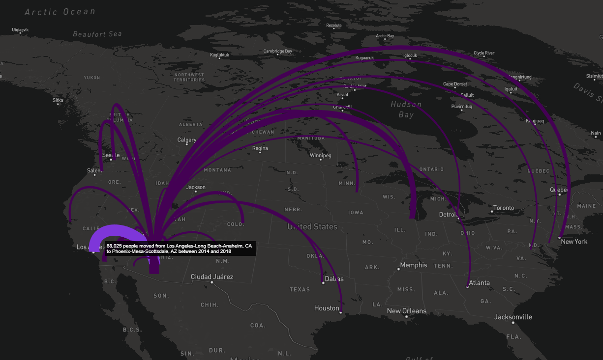

The main intent of the tidycensus package is to return population characteristics of the United States in tidy format allowing for integration with simple feature geometries. Its intent is not, and has never been, to wrap the universe of APIs and datasets available from the US Census Bureau. For datasets not included in tidycensus, I recommend Hannah Recht’s censusapi package (https://github.com/hrecht/censusapi), which allows R users to access all Census APIs, and packages such as Jamaal Green’s lehdr package (https://github.com/jamgreen/lehdr) which grants R users access to Census Bureau LODES data.
However, tidycensus incorporates a select number of Census Bureau datasets outside the decennial Census and ACS that are aligned with the basic goals of the package. One such dataset is the Population Estimates API, which includes information on a wide variety of population characteristics that is updated annually. Also available through tidycensus is the Migration Flows API, which estimates the number of people that have moved between pairs of places in a given year.
Population estimates
Population estimates are available in tidycensus through the get_estimates() function. Estimates are organized into products, which in tidycensus include "population", "components", "housing", and "characteristics". The population and housing products contain population/density and housing unit estimates, respectively. The components of change and characteristics products, in contrast, include a wider range of possible variables.
Components of change population estimates
By default, specifying "population", "components", or "housing" as the product in get_estimates() returns all variables associated with that component. For example, we can request all components of change variables for US states in 2019:
library(tidycensus)
library(tidyverse)
library(tigris)
options(tigris_use_cache = TRUE)
us_components <- get_estimates(geography = "state", product = "components")
us_components## # A tibble: 624 × 4
## NAME GEOID variable value
## <chr> <chr> <chr> <dbl>
## 1 Mississippi 28 BIRTHS 35978
## 2 Missouri 29 BIRTHS 71297
## 3 Montana 30 BIRTHS 11618
## 4 Nebraska 31 BIRTHS 25343
## 5 Nevada 32 BIRTHS 35932
## 6 New Hampshire 33 BIRTHS 12004
## 7 New Jersey 34 BIRTHS 99501
## 8 New Mexico 35 BIRTHS 23125
## 9 New York 36 BIRTHS 222924
## 10 North Carolina 37 BIRTHS 119203
## # … with 614 more rowsThe variables included in the components of change product consist of both estimates of counts and rates. Rates are preceded by an R in the variable name and are calculated per 1000 residents.
unique(us_components$variable)## [1] "BIRTHS" "DEATHS" "DOMESTICMIG"
## [4] "INTERNATIONALMIG" "NATURALINC" "NETMIG"
## [7] "RBIRTH" "RDEATH" "RDOMESTICMIG"
## [10] "RINTERNATIONALMIG" "RNATURALINC" "RNETMIG"Available geographies include "us", "state", "county", "metropolitan statistical area/micropolitan statistical area", and "combined statistical area".
If desired, users can request a specific component or components by supplying a character vector to the variables parameter, as in other tidycensus functions. get_estimates() also supports simple feature geometry integration to facilitate mapping. In the example below, we’ll acquire data on the net migration rate between 2018 and 2019 for all counties in the United States. We’ll also use the shift_geometry() function from the tigris package to shift and rescale counties outside the continental US for national mapping.
net_migration <- get_estimates(geography = "county",
variables = "RNETMIG",
year = 2019,
geometry = TRUE,
resolution = "20m") %>%
shift_geometry()
net_migration## Simple feature collection with 3142 features and 4 fields
## Geometry type: MULTIPOLYGON
## Dimension: XY
## Bounding box: xmin: -3112200 ymin: -1697728 xmax: 2258154 ymax: 1558935
## Projected CRS: USA_Contiguous_Albers_Equal_Area_Conic
## # A tibble: 3,142 × 5
## GEOID NAME variable value geometry
## <chr> <chr> <chr> <dbl> <MULTIPOLYGON [m]>
## 1 29227 Worth County, Missouri RNETMIG -8.91 (((114835.6 345071.6, 123…
## 2 31061 Franklin County, Nebraska RNETMIG -14.4 (((-267685.1 323958.5, -2…
## 3 36013 Chautauqua County, New York RNETMIG -3.54 (((1324221 647717.4, 1334…
## 4 37181 Vance County, North Carolina RNETMIG -3.25 (((1544260 32202.52, 1547…
## 5 47183 Weakley County, Tennessee RNETMIG -1.02 (((625934.5 -98887.34, 63…
## 6 44003 Kent County, Rhode Island RNETMIG 2.29 (((1977965 726702.3, 2004…
## 7 08101 Pueblo County, Colorado RNETMIG 6.15 (((-783174.5 122269, -773…
## 8 17175 Stark County, Illinois RNETMIG -10.6 (((500559 424779.4, 51023…
## 9 29169 Pulaski County, Missouri RNETMIG 4.42 (((312851.7 46166.36, 312…
## 10 19151 Pocahontas County, Iowa RNETMIG -12.2 (((88185.95 606331.9, 126…
## # … with 3,132 more rowsWe’ll next use tidyverse tools to generate a groups column that bins the net migration rates into comprehensible categories, and plot the result using geom_sf() and ggplot2.
order = c("-15 and below", "-15 to -5", "-5 to +5", "+5 to +15", "+15 and up")
net_migration <- net_migration %>%
mutate(groups = case_when(
value > 15 ~ "+15 and up",
value > 5 ~ "+5 to +15",
value > -5 ~ "-5 to +5",
value > -15 ~ "-15 to -5",
TRUE ~ "-15 and below"
)) %>%
mutate(groups = factor(groups, levels = order))
state_overlay <- states(
cb = TRUE,
resolution = "20m"
) %>%
filter(GEOID != "72") %>%
shift_geometry()
ggplot() +
geom_sf(data = net_migration, aes(fill = groups, color = groups), size = 0.1) +
geom_sf(data = state_overlay, fill = NA, color = "black", size = 0.1) +
scale_fill_brewer(palette = "PuOr", direction = -1) +
scale_color_brewer(palette = "PuOr", direction = -1, guide = FALSE) +
coord_sf(datum = NA) +
theme_minimal(base_family = "Roboto") +
labs(title = "Net migration per 1000 residents by county",
subtitle = "US Census Bureau 2019 Population Estimates",
fill = "Rate",
caption = "Data acquired with the R tidycensus package | @kyle_e_walker")
Estimates of population characteristics
The fourth population estimates product available in get_estimates(), "characteristics", is formatted differently than the other three. It returns population estimates broken down by categories of AGEGROUP, SEX, RACE, and HISP, for Hispanic origin. Requested breakdowns should be specified as a character vector supplied to the breakdown parameter when the product is set to "characteristics".
By default, the returned categories are formatted as integers that map onto the Census Bureau definitions explained here: https://www.census.gov/data/developers/data-sets/popest-popproj/popest/popest-vars/2017.html. However, by specifying breakdown_labels = TRUE, the function will return the appropriate labels instead. For example:
la_age_hisp <- get_estimates(geography = "county",
product = "characteristics",
breakdown = c("SEX", "AGEGROUP", "HISP"),
breakdown_labels = TRUE,
state = "CA",
county = "Los Angeles")
la_age_hisp## # A tibble: 210 × 6
## GEOID NAME value SEX AGEGROUP HISP
## <chr> <chr> <dbl> <chr> <fct> <chr>
## 1 06037 Los Angeles County, California 10039107 Both sexes All ages Both Hi…
## 2 06037 Los Angeles County, California 5157137 Both sexes All ages Non-His…
## 3 06037 Los Angeles County, California 4881970 Both sexes All ages Hispanic
## 4 06037 Los Angeles County, California 579856 Both sexes Age 0 to 4… Both Hi…
## 5 06037 Los Angeles County, California 236459 Both sexes Age 0 to 4… Non-His…
## 6 06037 Los Angeles County, California 343397 Both sexes Age 0 to 4… Hispanic
## 7 06037 Los Angeles County, California 378447 Both sexes Age 10 to … Hispanic
## 8 06037 Los Angeles County, California 600191 Both sexes Age 5 to 9… Both Hi…
## 9 06037 Los Angeles County, California 229438 Both sexes Age 5 to 9… Non-His…
## 10 06037 Los Angeles County, California 370753 Both sexes Age 5 to 9… Hispanic
## # … with 200 more rowsWith some additional data wrangling, the returned format facilitates analysis and visualization. For example, we can compare population pyramids for Hispanic and non-Hispanic populations in Los Angeles County:
compare <- filter(la_age_hisp, str_detect(AGEGROUP, "^Age"),
HISP != "Both Hispanic Origins",
SEX != "Both sexes") %>%
mutate(value = ifelse(SEX == "Male", -value, value))
ggplot(compare, aes(x = AGEGROUP, y = value, fill = SEX)) +
geom_bar(stat = "identity", width = 1) +
theme_minimal(base_family = "Roboto") +
scale_y_continuous(labels = function(y) paste0(abs(y / 1000), "k")) +
scale_x_discrete(labels = function(x) gsub("Age | years", "", x)) +
scale_fill_manual(values = c("darkred", "navy")) +
coord_flip() +
facet_wrap(~HISP) +
labs(x = "",
y = "2019 Census Bureau population estimate",
title = "Population structure by Hispanic origin",
subtitle = "Los Angeles County, California",
fill = "",
caption = "Data source: US Census Bureau population estimates & tidycensus R package")
Migration flows
The American Community Survey Migration Flows dataset estimates the number of people that have moved between pairs of places. The estimates are calculated based on where a person lived when surveyed and where they lived one year prior to being surveyed. The data is available at three geographic levels: county, county subdivision (minor civil division), and metropolitan statistical area (MSA). Because the number of movers may be small for some pairs of counties, the data is aggregated over a five-year period. The estimates for each five-year period represent the number of people that moved between places each year during that period.
The data is set up such that for each county, you can find the number of people that moved to that county from each of the other counties in the US as well as the number of people that moved from that county to each of the other counties. The net migration for each pair of counties is also provided (although this is simply the moved to minus moved from).
Using get_flows()
The get_flows() function from tidycensus provides access to these estimates. The only required argument for get_flows() is geography, which can be set to "county", "county subdivision", or "metropolitan statistical area". If geography is set to "county" and no other arguments are set, data for all pairs of counties is pulled from the Census API. This is a large data request as it will get all combinations of counties that had movers. More commonly, you might be interested in knowing the flows in and out of one county, county subdivision, or MSA. In this case, you can specify the state and county or MSA.
Here we get county-to-county flow data for Westchester County, NY:
wch_flows <- get_flows(
geography = "county",
state = "NY",
county = "Westchester",
year = 2018
)
wch_flows %>%
filter(!is.na(GEOID2)) %>%
head()## # A tibble: 6 × 7
## GEOID1 GEOID2 FULL1_NAME FULL2_NAME variable estimate moe
## <chr> <chr> <chr> <chr> <chr> <dbl> <dbl>
## 1 36119 01089 Westchester County, … Madison County, A… MOVEDIN 0 28
## 2 36119 01089 Westchester County, … Madison County, A… MOVEDOUT 26 41
## 3 36119 01089 Westchester County, … Madison County, A… MOVEDNET -26 41
## 4 36119 01095 Westchester County, … Marshall County, … MOVEDIN 0 28
## 5 36119 01095 Westchester County, … Marshall County, … MOVEDOUT 35 55
## 6 36119 01095 Westchester County, … Marshall County, … MOVEDNET -35 55With the default setting of get_flows(), data is returned in a “tidy” or long format. Notice that for each pair of places, there are three rows returned with one row for each variable (MOVEDIN, MOVEDOUT, and MOVEDNET) and the the estimate and margin of error for these variables are in columns. GEOID1 and FULL1_NAME are the FIPS code and name of the origin county. In this case, it will also be Westchester County since that is the only county we requested. GEOID2 and FULL2_NAME are the FIPS code and name of the destination county.
One simple question we can answer with this data is, to which county did the most people move from Westchester?
## # A tibble: 6 × 7
## GEOID1 GEOID2 FULL1_NAME FULL2_NAME variable estimate moe
## <chr> <chr> <chr> <chr> <chr> <dbl> <dbl>
## 1 36119 09001 Westchester County,… Fairfield County, … MOVEDOUT 3916 778
## 2 36119 36061 Westchester County,… New York County, N… MOVEDOUT 3328 596
## 3 36119 36005 Westchester County,… Bronx County, New … MOVEDOUT 2063 418
## 4 36119 36027 Westchester County,… Dutchess County, N… MOVEDOUT 1870 454
## 5 36119 36079 Westchester County,… Putnam County, New… MOVEDOUT 1318 324
## 6 36119 36081 Westchester County,… Queens County, New… MOVEDOUT 1082 240The MOVEDOUT variable only estimates the number of people that moved out of Westchester County and doesn’t account for the number of people that moved in to Westchester from each county. If you are interested in net migration (moved in - moved out), you can use the MOVEDNET variable.
## # A tibble: 6 × 7
## GEOID1 GEOID2 FULL1_NAME FULL2_NAME variable estimate moe
## <chr> <chr> <chr> <chr> <chr> <dbl> <dbl>
## 1 36119 09001 Westchester County… Fairfield County, C… MOVEDNET -1768 958
## 2 36119 36027 Westchester County… Dutchess County, Ne… MOVEDNET -1119 497
## 3 36119 06037 Westchester County… Los Angeles County,… MOVEDNET -486 339
## 4 36119 12099 Westchester County… Palm Beach County, … MOVEDNET -450 182
## 5 36119 25021 Westchester County… Norfolk County, Mas… MOVEDNET -358 351
## 6 36119 36079 Westchester County… Putnam County, New … MOVEDNET -340 407You may have noticed that there are some destination geographies that are not other counties. For people that moved into to Westchester from outside the United States, the Migration Flows data reports the region that they moved from, such as Africa or Asia. Since this dataset is based on the American Community Survey, there is no way of knowing how many people moved out of the United States, so for all pairs of US to non-US places, the value of MOVEDOUT and MOVEDNET is NA. The GEOID of non-US places is also NA.
## # A tibble: 6 × 7
## GEOID1 GEOID2 FULL1_NAME FULL2_NAME variable estimate moe
## <chr> <chr> <chr> <chr> <chr> <dbl> <dbl>
## 1 36119 <NA> Westchester County, New York Africa MOVEDIN 419 411
## 2 36119 <NA> Westchester County, New York Africa MOVEDOUT NA NA
## 3 36119 <NA> Westchester County, New York Africa MOVEDNET NA NA
## 4 36119 <NA> Westchester County, New York Asia MOVEDIN 2267 436
## 5 36119 <NA> Westchester County, New York Asia MOVEDOUT NA NA
## 6 36119 <NA> Westchester County, New York Asia MOVEDNET NA NADemographic characteristics
Datasets between 2006-2010 and 2011-2015 have the ability to cross flow data with selected demographic characteristics such as age, race, employment status. For instance, the following call will get the number of movers to and from the Los Angeles-Long Beach Metro Area by race.
la_flows <- get_flows(
geography = "metropolitan statistical area",
breakdown = "RACE",
breakdown_labels = TRUE,
msa = 31080, # los angeles msa fips code
year = 2015
)
# net migration between la and san francisco
la_flows %>%
filter(str_detect(FULL2_NAME, "San Fran"), variable == "MOVEDNET")## # A tibble: 5 × 9
## GEOID1 GEOID2 FULL1_NAME FULL2_NAME RACE RACE_label variable estimate moe
## <chr> <chr> <chr> <chr> <chr> <chr> <chr> <dbl> <dbl>
## 1 31080 41860 Los Angele… San Franci… 00 All races MOVEDNET -2433 1585
## 2 31080 41860 Los Angele… San Franci… 01 White alo… MOVEDNET -1077 1096
## 3 31080 41860 Los Angele… San Franci… 02 Black or … MOVEDNET 98 378
## 4 31080 41860 Los Angele… San Franci… 03 Asian alo… MOVEDNET -580 778
## 5 31080 41860 Los Angele… San Franci… 04 Other rac… MOVEDNET -874 549Note that the demographic characteristics must be specified in the breakdown argument of get_flows() (not the variable argument). For each dataset there are three or four demographic characteristics to choose from. For more information and to see which characteristics are available in each year, visit the Census Migration Flows documentation.
Mapping migration flows
An additional feature of get_flows() is an option to return spatial data associated with each place. In contrast to other spatial data available through tidycensus, get_flows() returns point rather than polygon geometry. To get geometry with the flows data, set geometry = TRUE. The return of get_flows() will now be an sf object with the centroids of both origin and destination as sfc_POINT columns. The origin point feature is returned in a column named centroid1 and is the active geometry column in the sf object. The destination point feature is returned in the centroid2 column.
phx_flows <- get_flows(
geography = "metropolitan statistical area",
msa = 38060,
year = 2018,
geometry = TRUE
)
phx_flows %>%
head()## Simple feature collection with 6 features and 7 fields
## Active geometry column: centroid1
## Geometry type: POINT
## Dimension: XY
## Bounding box: xmin: -112.0705 ymin: 33.18571 xmax: -112.0705 ymax: 33.18571
## Geodetic CRS: NAD83
## # A tibble: 6 × 9
## GEOID1 GEOID2 FULL1_NAME FULL2_NAME variable estimate moe
## <chr> <chr> <chr> <chr> <chr> <dbl> <dbl>
## 1 38060 <NA> Phoenix-Mesa-Scott… Outside Metro Area … MOVEDIN 21602 1464
## 2 38060 <NA> Phoenix-Mesa-Scott… Outside Metro Area … MOVEDOUT 21192 1559
## 3 38060 <NA> Phoenix-Mesa-Scott… Outside Metro Area … MOVEDNET 410 2186
## 4 38060 <NA> Phoenix-Mesa-Scott… Africa MOVEDIN 1078 385
## 5 38060 <NA> Phoenix-Mesa-Scott… Africa MOVEDOUT NA NA
## 6 38060 <NA> Phoenix-Mesa-Scott… Africa MOVEDNET NA NA
## # … with 2 more variables: centroid1 <POINT [°]>, centroid2 <POINT [°]>With the centroids attached to each pair of places, it is straightforward to map the migration flows. Here, we look at the most common origin MSAs for people moving to Phoenix-Mesa-Scottsdale, AZ. To make an interactive map of the flows, we’ll use the excellent mapdeck package. To use mapdeck, you’ll need a Mapbox account and access token.
library(mapdeck)
top_move_in <- phx_flows %>%
filter(!is.na(GEOID2), variable == "MOVEDIN") %>%
slice_max(n = 25, order_by = estimate) %>%
mutate(
width = estimate / 500,
tooltip = paste0(
scales::comma(estimate * 5, 1),
" people moved from ", str_remove(FULL2_NAME, "Metro Area"),
" to ", str_remove(FULL1_NAME, "Metro Area"), " between 2014 and 2018"
)
)
top_move_in %>%
mapdeck(style = mapdeck_style("dark"), pitch = 45) %>%
add_arc(
origin = "centroid1",
destination = "centroid2",
stroke_width = "width",
auto_highlight = TRUE,
highlight_colour = "#8c43facc",
tooltip = "tooltip"
)